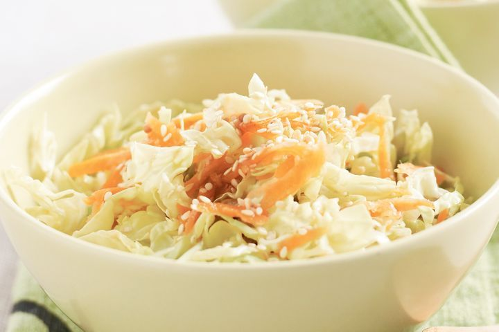
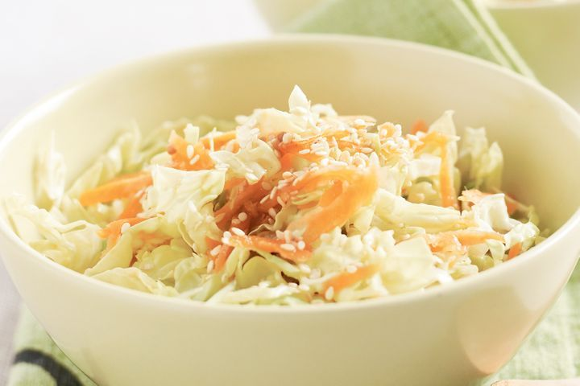

easy and affordable recipes for the average broke uni student
Cooking is hard enough already for normal adults. But for us young adults who have just recently moved out and are living on our own for the first time ever? It can get hella overwhelming. However, cooking can be made a whole lot easier when you’re following yummy and easy recipes. It’s just like what that rat said from Ratatouille — anyone can cook!
My name is Jo and I turn struggle meals into struggle experiences. Join me as I walk through a full four-course meal that will not only leave your wallet happy, but your tastebuds as well.
 



| COURSE | RECIPE |
|---|---|
| HORS D'OEUVRES | JO'RS D'OEUVRES |
| SALAD | CABBAGE SALAD |
| ENTRÉE | CHICKEN VEGGIE UDON |
| DESSERT | MELONA SOJU |
I’m Joanne Lang, a second year university student at the University of Waterloo. Although I’ve kind of gotten the hang of planning meals, budgeting, and meal-prepping, I still sometimes cave and opt for food out when I’m lazy. But I like to think that I’ve gotten a lot better at grocery shopping and cooking this past year! It all comes down to practice and knowing where to find cool resources like this one to help guide you along. I am still by no means GOOD at cooking haha. But I haven’t starved or given myself food poisoning yet. A win is a win. If you’d like to reach out, you can find my email here. Happy cooking!

SAY HI :)